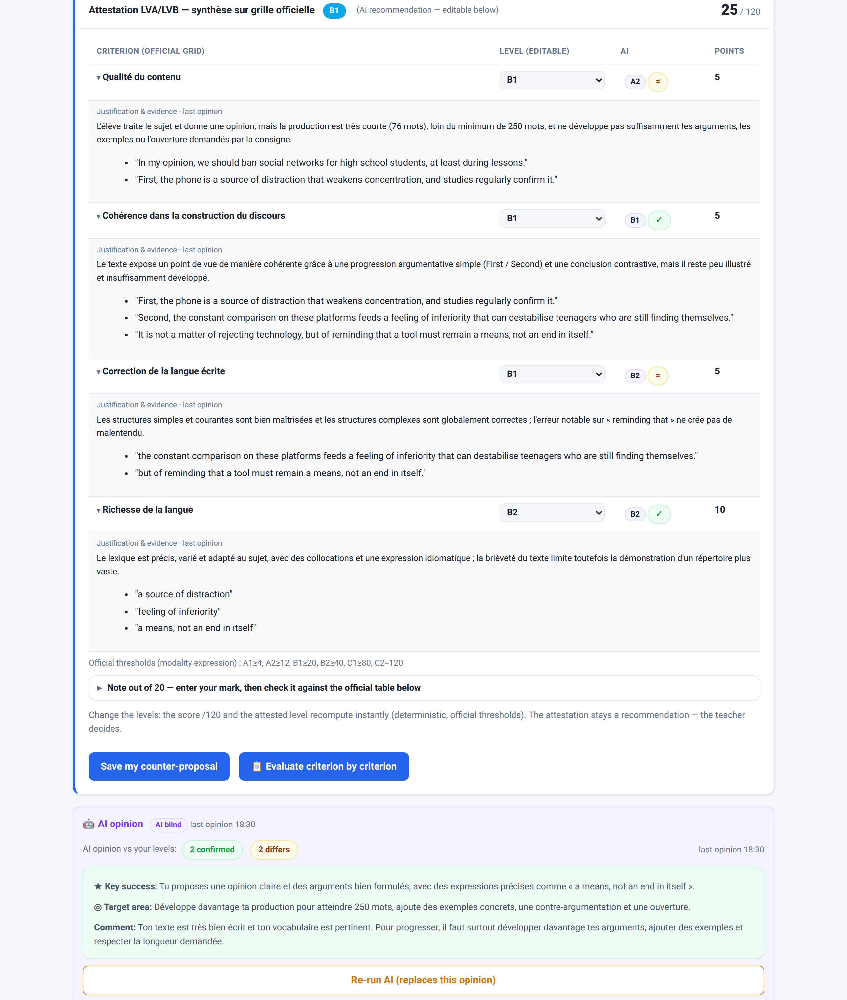
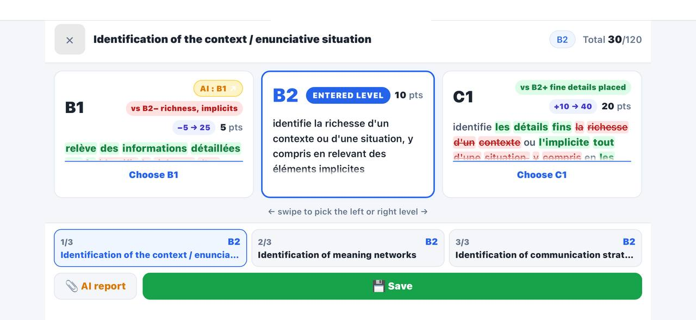

Corriger plus vite — pour un feedback plus rapide aux élèves.
BabelGrade transforme une copie manuscrite ou un
enregistrement oral en une attestation CEFR motivée :
chaque niveau recommandé (A1–C2) s'appuie sur des citations exactes du travail
de l'élève. Trois agents d'IA travaillent ensemble, sur une machine locale :
l'IA abaisse la charge de correction — elle ne remplace jamais le jugement
du correcteur.
Trois agents d'IA, une seule machine
1
Agent vision (OCR) · Qwen3.8-27B, GPU local
Lit la copie manuscrite ligne à ligne, à l'identique — ratures,
papier quadrillé compris — sans « corriger » silencieusement les
erreurs de l'élève : ses fautes sont le signal, pas le bruit.
2
Agent ASR · faster-whisper base, int8, CPU, hors-ligne
Transcrit l'oral avec l'horodatage mot à mot et calcule les
métriques de fluidité (WPM, pauses, hésitations) — déterministe, sans LLM.
3
Agent évaluateur · Qwen3.8-27B, SGLang local
Croise copie, consigne, document source et grille : produit la
Matrice de Preuves — niveau par critère, justification, preuve verbatim.
Aucun niveau sans citation (le backend avertit sinon).
Un flux, deux modes de travail : « IA d'abord » (le correcteur
valide l'avis de l'IA) ou « correcteur d'abord » (le correcteur note
lui-même, puis l'IA confirme ou réfute chaque critère avec preuve).
photos / audio → vision → ASR → évaluateur →Matrice de Preuves
Ce que le correcteur gagne
~2 min par copie écrite, ~3 min par oral — un avis IA argumenté, prouvé citation par citation, niveau par niveau, que le correcteur valide ou corrige.
Grilles officielles LVA/LVB prêtes à l'emploi : score /120 et attestation recomptés en direct à chaque niveau modifié.
Feedback argumenté pour l'élève : points forts, zones de progrès, exemples cités de sa propre copie.
Annotation sur la copie : sélection d'un passage → recadrage photo, marqueur (niveau, sticker, note) lu par l'IA au passage suivant.
Suivi de classe : statistiques par sujet et progression niveau par élève, pour le conseil de classe.
Interface FR · EN · ES · DE, grilles officielles disponibles en français et traduites à l'écran.
L'avis de l'IA, corrigible

La Matrice de Preuves — chaque critère de la grille officielle
reçoit un niveau, sa justification et la citation exacte qui le justifie.
La colonne IA (✓/≠) montre d'un coup d'œil où l'avis de l'IA diverge du correcteur.

Évaluation critère par critère — le correcteur navigue
entre niveaux (← swipe →), voit l'avis de l'IA par critère (✓/≠), ajuste le
niveau saisi, le score /120 et l'attestation se recomptent en direct.